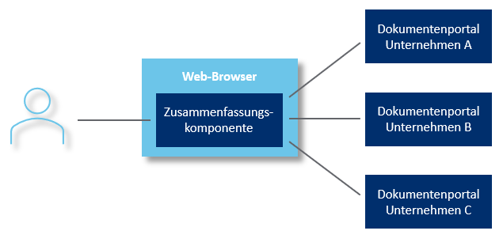

Die digitale Zustellung von Dokumenten von Unternehmen an ihre Kunden und Partner gewinnt zunehmend an Bedeutung, während die klassische Briefpost immer mehr an Relevanz verliert. Zwei gängige Methoden der digitalen Zustellung sind E-Mail und Dokumentenportale. Während E-Mails zwar weit verbreitet sind, sind sie mit einigen gravierenden Schwächen behaftet, die ihre Funktion als zuverlässiges Mittel der Dokumentenzustellung stark einschränken:
Gerade wegen der weiten Verbreitung von E-Mail ist unwahrscheinlich, dass die architekturellen Probleme gelöst werden. Dokumentenportale sind für wichtige Dokumente deshalb das Mittel der Wahl. Momentan sind Dokumentenportale allerdings eher eine Notlösung, denn es gibt mit bisherigen Architekturansätzen für Dokumentenportale einige Probleme, wenn man sie bis zur logischen Konsequenz "alle wichtigen Dokumente aller Bürger werden über Dokumentenportalen zugestellt" durchdenkt. Im Folgenden möchte ich genauer beschreiben, weshalb ich die bisherige Architekturansätzen ("Kleinstaaterei" und "Imperium") nicht als erstrebenswert ansehe und weshalb eine Zukunft ohne physischen Brief einem dritten Ansatz ("Föderation") folgen sollte!
Ein heute weit verbreiteter Ansatz ist, dass jede Bank, Versicherung oder jedes Unternehmen ihr eigenes Dokumentenportal entwickelt und betreibt. Dies führt übergreifend betrachtet zu einem Nebeneinander unabhängiger Systeme: Kleinstaaterei.
Vorteile:
Nachteile:
Die Vorteile liegen hier insgesamt also eher im Bereich Datenschutz/Sicherheit und auf Seiten der Absender-Unternehmen.
Verschiedene Anbieter haben immer wieder versucht (und tun dies teilweise noch heute), sich als zentrales Dokumentenportal für alle Dokumente zu etablieren, meist als SaaS-Lösung. Dies führt übergreifend betrachtet zu einer zentralen Instanz, die alle Dokumente verwaltet und kontrolliert – ein "Dokumenten-Imperium". In einigen Ländern, insbesondere im skandinavischen Raum, ist dieser Ansatz erfolgreicher als in Deutschland.
Vorteile:
Nachteile:
Die Vorteile liegen hier insgesamt eher im Bereich Usability aus Nutzersicht, jedoch gibt es große Fragezeichen in Bezug auf Resilienz.
Die Klassifizierung von Dokumentenportal-Architekturen kann nach zwei Hauptaspekten erfolgen: (1) Wie die Speicherung der Dokumente global über alle Absender hinweg erfolgt und (2) wie die Schnittstelle aus Benutzersicht gestaltet ist. Im derzeit verbreiteten Ansatz der "Kleinstaaterei" sind sowohl die Speicherung als auch die Benutzer-Schnittstelle über verschiedene Systeme hinweg verteilt und fragmentiert. Das "Imperium"-Modell hingegen zentralisiert beides – die Speicherung und die Benutzer-Schnittstelle – in einem einzigen System.
Ein zukunftsweisender dritter Weg erlaubt es diesen beiden Aspekten, sich unabhängig zu bewegen: Eine verteilte Speicherung der Dokumente bei gleichzeitig konsolidierter Schnittstelle aus Benutzersicht. Dies bedeutet eigenständige Dokumentenportale, die sich zu einem kooperierenden System zusammenschließen – eine "Dokumentenportal-Föderation".
Eine Föderation, sei es in Star Trek, der Politik oder der IT, ist stets ein Zusammenschluss selbstständiger Einheiten, die nach außen hin einheitlich auftreten. In der IT erfordert dies eine Zusammenfassungs-Komponente, die den gemeinsamen Zugriff für Nutzer auf die einzelnen Einheiten innerhalb der Föderation ermöglicht. Wenn diese Zusammenfassungs-Komponente beispielsweise per JavaScript in einem Web-Browser auf dem Client betrieben wird und somit ohne zentrale Komponenten auskommt, handelt es sich um eine "browserbasierte Föderation". Diese hat den Vorteil, keine Installation beim Client zu benötigen und keinen Single Point of Attack oder Failure zu bieten.
Die Föderationsarchitektur für Dokumentenportale setzt sich aus zwei zentralen Aspekten zusammen: Föderierte Identität/Login mit OpenID als etabliertem Standard und eine föderierte Postfach-Übersicht, die einen zusammengefassten Blick auf alle Dokumente von allen Absendern ermöglicht. Die POSY-Postbox (https://set.de/postbox) bietet für beide Aspekte eine Lösung.
Vorteile der Dokumentenportal-Föderation:
Nachteile:
Dieser Ansatz vereint das Beste aus den anderen Modellen: Er bietet eine gute Usability für die Nutzer, während gleichzeitig hoher Datenschutz, Resilienz und Erweiterbarkeit für die Betreiber gewährleistet sind. Die Dokumentenportal-Föderation stellt somit ein fortschrittliches und nachhaltiges Architekturmodell für die Zustellung wichtiger Dokumente dar, das den Anforderungen und Herausforderungen der digitalen Zukunft gerecht wird.
In gewisser Weise stellt auch das E-Mail-System einen Föderationsansatz dar: Die Datenhaltung erfolgt verteilt, da jeder Empfänger seinen eigenen Mailserver betreiben oder einen Anbieter frei wählen kann. Zudem ist die Nutzerschnittstelle standardisiert und je Benutzer zentralisierbar, da alle Dokumente aller Absender in einem einzigen Mail-Client verfügbar sind.
Doch abgesehen von den "historisch gewachsenen" Schwächen des E-Mail-Systems gibt es insbesondere einen entscheidenden Unterschied zur Föderationsarchitektur für Dokumentenportale: die Zuständigkeit für die Speicherung der Dokumente und den Betrieb der zugehörigen Server. Bei E-Mail liegt diese Aufgabe bei den Empfängern, während bei der Föderationsarchitektur für Dokumentenportale die Absender-Unternehmen dafür zuständig sind.
Im der Kommunikation zwischen Unternehmen und ihren Kunden/Partnern gibt es ein Ungleichgewicht: Unternehmen verfügen in der Regel über mehr IT-Expertise und Ressourcen als ihre Kunden, d. h. als die Empfänger der Dokumente. Wenn die Empfänger die Server betreiben müssen, bleibt ihnen häufig keine andere Wahl, als auf Drittanbieter zurückzugreifen, wie es im E-Mail-Bereich auch üblich ist. Dadurch wird erneut eine dritte Partei in die Kommunikation eingebunden, was wiederum die genannten Nachteile mit sich bringt.
Die Föderationsarchitektur für Dokumentenportale überwindet diese Herausforderung, indem sie die Verantwortung für die Speicherung und den Serverbetrieb den Absender-Unternehmen überträgt und gleichzeitig eine einheitliche Nutzerschnittstelle bietet. Auf diese Weise werden die Vorteile einer föderierten Struktur genutzt, ohne die Nachteile durch Einbindung einer dritten Partei entstehen zu lassen.
Bei der Kommunikation zwischen Privatpersonen stellt sich die Situation übrigens anders dar: Hier verfügen beide Seiten der Kommunikation im Durchschnitt über keine besondere IT-Expertise. Der Betrieb durch den Absender würde somit ähnliche Probleme verursachen wie der Betrieb durch den Empfänger.
Im Rahmen seiner Digitalisierungsstrategie plant auch der Staat, ein Dokumentenportal anzubieten. Stichworte dazu sind "Bürgerportal" und BundID. Aktuell sieht es so aus, als ob dieses "nur" ein weiteres Portal neben den diversen Unternehmensportalen sein soll — also Fortführung der "Kleinstaaterei". Dies sehen Viele als vertane Chance, und der Wunsch, das Bürgerportal auch für Dokumente von Unternehmen zu öffnen, ist bereits laut geworden. Damit wäre das Bürgerportal auf dem Weg zum "Imperium". Genauso besteht aber auch die Chance, das Bürgerportal in eine Dokumentenportal-Föderation einzubinden. Vor dem Hintergrund der föderalen Struktur der Bundesrepublik könnte man das sogar als naheliegend bezeichnen. Die Zeit wird zeigen, wie diese Entwicklung weitergeht.
Secure-Mail-Anbieter preisen ihre Dienste oft als die verlässliche Lösung für die sichere digitale Kommunikation zwischen Unternehmen und ihren Kunden an. Häufig werden diese Anbieter als die sichere Alternative zu traditionellen E-Mail-Diensten positioniert. Doch wenn wir diese Dienstleistungen genauer betrachten, sehen wir, dass sie nach der oben genannten Klassifikation meist nichts anderes sind als zentrale Dokumentenportale – also "Imperium".
Obwohl diese Secure-Mail-Dienste attraktive Features wie verschlüsselte Nachrichten und eine nahtlose Integration in bestehende E-Mail-Workflows bieten, bringen sie auch die oben genannten Probleme eines zentralen Systems mit sich. Die Versprechungen von Sicherheit und Effizienz müssen daher kritisch hinterfragt werden, besonders wenn Alternativen wie föderierte Architekturen existieren, die sowohl die Sicherheit als auch die Flexibilität und Resilienz wesentlich verbessern können.
Während die Vorteile der Föderationsarchitektur auf den ersten Blick hauptsächlich beim Empfänger liegen, können auch Unternehmen erheblich davon profitieren. Im Zuge des digitalen Wandels versprechen sich Unternehmen vom Wechsel von physischer Zustellung zu Dokumentenportalen vor allem zwei Dinge: geringere Kosten und einen zusätzlichen Touch-Point mit dem Kunden. Letzteres ist besonders wichtig, um die Kundenbindung zu stärken und weitere Geschäftsmöglichkeiten zu eröffnen.
Damit diese Vorteile zur Geltung kommen, muss das Dokumentenportal auch tatsächlich von den Kunden genutzt werden. Dies betrifft sowohl die Registrierung neuer Nutzer als auch die regelmäßige Nutzung des Portals. Hierbei kann die Föderationsarchitektur entscheidend helfen. Sie baut Hemmschwellen für die Registrierung ab, indem sie einfachere und konsolidierte Zugänge ermöglicht. Darüber hinaus fördert sie den Aufbau einer Gewohnheit zum regelmäßigen Abruf der Dokumente, da die Nutzer von einem benutzerfreundlichen und einheitlichen Zugang für alle ihre Dokumente profitieren.
Die positiven Auswirkungen dieses Ansatzes werden durch Ergebnisse der SDP-2-Studie untermauert (https://mds-it.de/sdp-2). Ein beispielhafter Business Case auf Basis der Studienergebnisse zeigt für ein Unternehmen mit 3.000.000 Kunden einen Zuwachs von 660.000 registrierten Kunden und 350.000 zusätzlichen regelmäßigen Nutzungen. Dies führt zu einem potenziellen Nutzen von insgesamt 1,8 Millionen Euro pro Jahr im Optimalfall und immer noch rund 800.000 Euro pro Jahr unter pessimistischeren Annahmen.
Diese Zahlen verdeutlichen, dass die Föderationsarchitektur nicht nur den Komfort und die Sicherheit für die Endnutzer erhöht, sondern auch erhebliche wirtschaftliche Vorteile für Unternehmen bieten kann. Durch die erleichterte Registrierung und erhöhte Nutzungsfrequenz können Unternehmen ihre Betriebskosten senken und gleichzeitig eine engere Beziehung zum Kunden aufbauen. So schafft die Föderationsarchitektur eine Win-Win-Situation für alle Beteiligten und stellt ein zukunftsweisendes Modell für die digitale Dokumentenzustellung dar.
Alle bisherigen Ansätze zur Ablösung des physischen Briefs haben inakzeptable Schwächen: E-Mail ist unsicher, verschlüsselte E-Mail ist unpraktisch, "Kleinstaaterei" mit Dokumentenportalen ist gegenüber dem physischen Briefkasten ein deutlicher Rückschritt für den Empfänger und zentrale Dokumentenportale sehen auf den ersten Blick gut aus, bergen aber untragbare Risiken in Bezug auf Datenschutz und Sicherheit. Der einzige Ansatz, bei dem ich bisher keine gravierenden Schwächen sehe, ist die oben beschriebene browserbasierte Föderationsarchitektur. Deshalb arbeite ich mit meinen Kollegen bei der SET daran, diesen Wirklichkeit werden zu lassen. Seht ihr Schwächen, die ich übersehen habe? Habt ihr Fragen oder andere Anmerkungen? Meldet euch gerne bei mir!
Mein DOXNET-Vortrag zum Thema bei Youtube